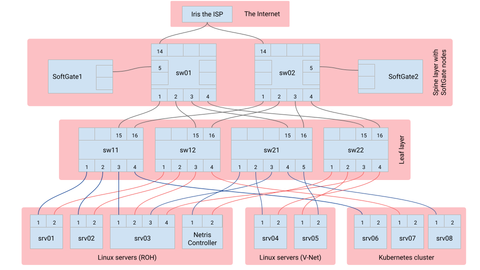

Welcome to Netris Sandbox
Netris sandbox is a ready-to-use environment for testing Netris automatic NetOps. We have pre-created some example services for you, details of which can be found in the “Provided Example Configurations” document. Feel free to view, edit, delete, and create new services. Reach out to us if you have any questions at https://netris.ai/slack
The credentials for the sandbox have been provided to you by email in response to your sandbox request.
This environment includes:
Netris Controller: A cloud-hosted Netris controller, loaded with examples.
Switching fabric: Two spine switches and four leaf switches, all Netris-operated.
SoftGates: Two SoftGate gateway nodes for border routing, L4 Load Balancing, site-to-site VPN, and NAT. Both Netris-operated.
Linux servers: Five Linux servers, with root access where you can run any applications for your tests.
Kubernetes cluster: A 3 node Kubernetes cluster, user integratable with Netris controller, feel free to deploy any applications for your tests.
ISP: Internet upstream, providing the sandbox Internet connectivity with real-world routable public IP addresses.
Topology diagram
Netris GUI
Linux servers
- Example pre-configured Netris services:
srv01, srv02, srv03 & Netris Controller - are consuming a ROH (Routing On Host) Netris example service, see Services–>ROH.
srv01, srv02 - are behind Anycast L3 load balancer.
srv04, srv05 - are consuming a V-NET (routed VXLAN) Netris example service, see Services–>V-NET.
Accessing Linux servers:
srv01: ssh demo@166.88.17.186 -p 30061
srv02: ssh demo@166.88.17.186 -p 30062
srv03: ssh demo@166.88.17.186 -p 30063
srv04: ssh demo@166.88.17.186 -p 30064
srv05: ssh demo@166.88.17.186 -p 30065
Kubernetes cluster
This sandbox provides an up and running 3 node Kubernetes cluster. You can integrate it with the Netris controller by installing netris-operator. Step-by-step instructions are included in the “Run an On-Prem Kubernetes Cluster with Netris Automatic NetOps” document.
Upstream ISP
This sandbox provides an upstream ISP service with real-world Internet routing. There is one pre-configured example under NET–>E-BGP service, which is advertising the public IP subnet to the upstream ISP IRIS.
ISP settings:
(pre-configured example)
Name: iris-isp1-example
Neighbor AS: 65007
Vlan: 1061
IP customer: 50.117.59.90/30
IP Iris: 50.117.59.89/30
Neighbor AS: 65007
Vlan: 1062
IP customer: 50.117.59.94/30
IP Iris: 50.117.59.93/30
Networks used
Management subnet: 10.254.45.0/24
Loopback subnet: 10.254.46.0/24
Example subnet: 192.168.45.0/24
Customer subnet: 192.168.46.0/24
K8s subnet: 192.168.110.0/24
Public subnet: 50.117.59.144/28